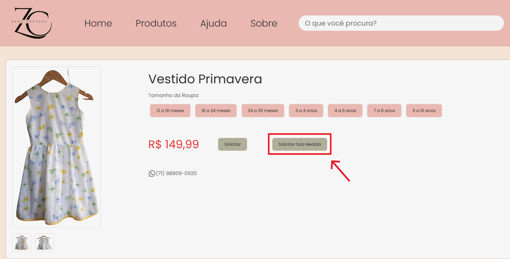
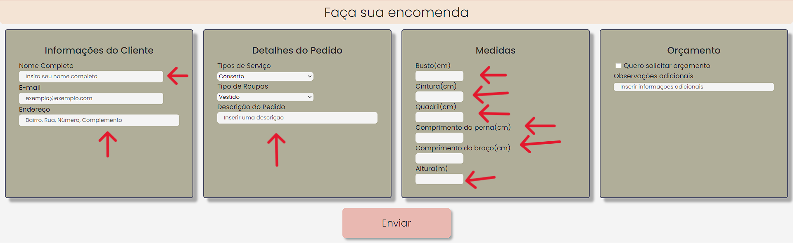
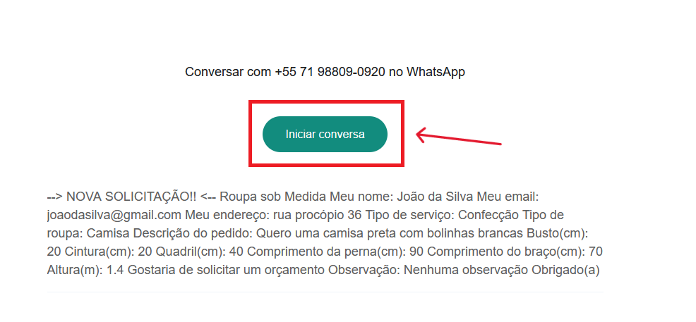
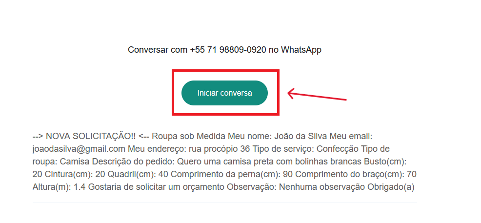

Perguntas Frequentes:
Quais são os tamanhos das roupas?
As roupas são feitas em tamanhos padrões,
sendo eles informados na página que se
encontra na página da roupa.
Como faço uma troca ou devolução?
Para trocas e devoluções, entre em contato com o
nosso atendimento via WhatsApp (71) 98809-0920.
Qual é o prazo de entrega?
O prazo de entrega da Zana Costura
vai depender da emenda que esta legalizado
e se for mais preciso fale com a gente no WhatsApp
(71) 98809-0920.
Como posso entrar em contato?
Entre em contato pelo nosso e-mail: contato@exemplo.com
Como eu compro?
Fizemos o site para quando você for comprar o seu produto,
você é redirecionado para o WhatsApp para finalizar a sua compra.
 Clique em "Comprar" para seguir.
Clique em "Comprar" para seguir.
 Selecione um dos tamanhos (destacado em azul) e depois clique em Solicitar ou se quiser em tamanhos personalizados, clique em Solicitar Sob Medida (destacados em vermelho).
Selecione um dos tamanhos (destacado em azul) e depois clique em Solicitar ou se quiser em tamanhos personalizados, clique em Solicitar Sob Medida (destacados em vermelho).
 Ao clicar em conversar uma mensagem automatica estará informando os detalhes do seu pedido.
Ao clicar em conversar uma mensagem automatica estará informando os detalhes do seu pedido.
Como eu compro sob medida?
Fizemos o site para quando você for comprar o seu produto,
você é redirecionado para o WhatsApp para finalizar a sua compra.
Clique em "Comprar" para comprar.

Clique em solicitar sob medida

Preencha com seus dados todos os campos abrigatorios.
 Depois de preencher todos os dados obrigatorios clique em "Enviar"

Ao clicar em conversar uma mensagem automatica estará informando os detalhes do seu pedido. Negociações, requisições e dúvidas podem ser tratadas pelo WhatsApp com Zana.
Depois de preencher todos os dados obrigatorios clique em "Enviar"

Ao clicar em conversar uma mensagem automatica estará informando os detalhes do seu pedido. Negociações, requisições e dúvidas podem ser tratadas pelo WhatsApp com Zana.